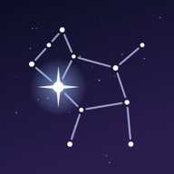

Zoolog EnglishПолитика конфиденциальности
Действует с 22 ноября 2026 года
Коротко: всё, что вы записываете в Zoolog, хранится только на вашем телефоне. Мы этого не видим, никуда не отправляем и не следим за вами.
Что хранит приложение
Приложение хранит только то, что вы добавили сами: сведения о питомцах, записи, фото и настройки. Если вы впишете своё имя и телефон в объявление о пропаже, они тоже останутся только на телефоне.
Где это хранится
Только на телефоне, внутри приложения. У Zoolog нет серверов, аккаунтов и входа по паролю. Приложение само не выходит в интернет — только когда вы открываете ссылку, например эту страницу.
Если на iPhone включена резервная копия (в iCloud или на компьютере), данные Zoolog попадают в неё вместе с другими приложениями. Это копия Apple под вашей учётной записью, у нас к ней доступа нет.
Чего мы не делаем
- не собираем данные и не отправляем их на серверы;
- не показываем рекламу;
- не подключаем аналитику и отслеживание;
- не передаём и не продаём данные.
Когда данные покидают телефон
Только когда вы сами так решите:
- «Поделиться» — файл получит тот, кого вы выберете;
- «Написать нам» — письмо уходит с вашей почты. В нём будут версия приложения и модель телефона, это видно до отправки. Письма читаем только чтобы ответить.
Разрешения
Разрешения на фото, камеру и уведомления нужны только для функций самого приложения. Любое из них можно выключить в настройках iPhone.
Как всё удалить
Удалите приложение — вместе с ним с телефона удалятся все данные. Если они попали в резервную копию iPhone, их можно удалить в настройках iCloud.
Дети
Zoolog не предназначен специально для детей и ни о ком не собирает данные.
Изменения
Если появятся облако или аккаунты, мы обновим эту страницу и заранее предупредим в приложении.
Связь
Privacy Policy
Effective November 22, 2026
In short: everything you record in Zoolog stays on your phone. We can’t see it, we don’t send it anywhere, and we don’t track you.
What the app stores
The app stores only what you add yourself: details about your pets, records, photos and settings. If you enter your name and phone number in a lost pet notice, they also stay only on your phone.
Where it is stored
Only on your phone, inside the app. Zoolog has no servers, no accounts and no sign-in. The app doesn’t go online on its own — only when you open a link, such as this page.
If iPhone backup is turned on (to iCloud or a computer), Zoolog data is included in it along with other apps. That backup belongs to Apple and is under your account; we have no access to it.
What we don’t do
- collect data or send it to servers;
- show ads;
- use analytics or tracking;
- share or sell data.
When data leaves your phone
Only when you decide so:
- Share — the file goes to whoever you choose;
- Write to us — the email is sent from your own mail account. It includes the app version and phone model, visible before sending. We read emails only to reply.
Permissions
Access to photos, camera and notifications is used only for the app’s own features. You can turn any of them off in iPhone Settings.
How to delete everything
Delete the app — all its data will be removed from the phone with it. If the data is in an iPhone backup, you can delete it in iCloud settings.
Children
Zoolog is not made specifically for children and doesn’t collect data about anyone.
Changes
If we add cloud sync or accounts, we will update this page and let you know in the app in advance.